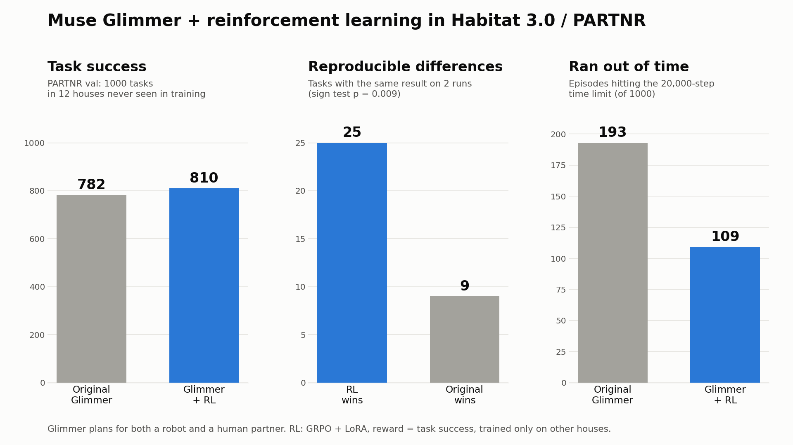
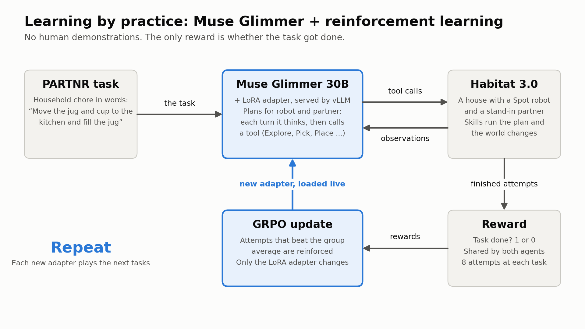
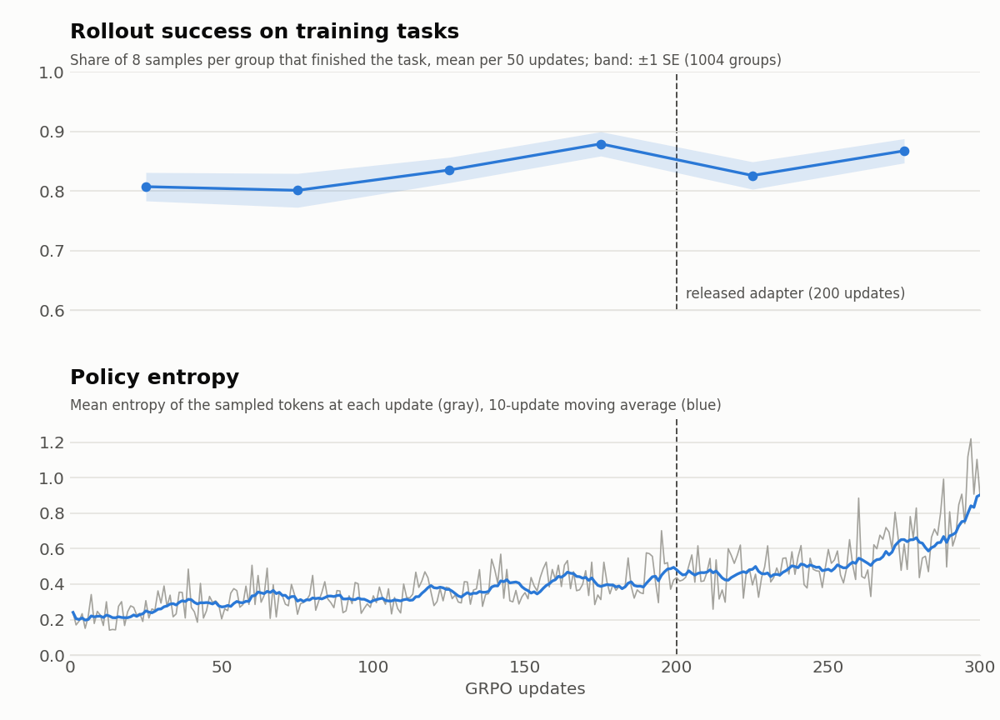

Muse Glimmer + RL: teaching an open model to plan for a robot working alongside a person
Household robots will have to plan alongside people, in homes they have never seen. I took Meta's open-weight Muse Glimmer 30B, made it the planner for both a Spot robot and a simulated human in Habitat 3.0 on the PARTNR benchmark, and improved it with reinforcement learning in simulation: no human labels, only the reward for finishing the task. Tested on 1000 tasks in 12 houses that were never used in training, the RL-tuned model succeeds more often and finishes faster.
Initially built for the Meta Global AI Developer Hackathon (Oct 29 – Nov 4, 2026).

3-minute demo
How it works

Practicing with a stand-in partner
A robot can't practice thousands of chores with real people, so Glimmer practices with a simulated partner played by a copy of itself: self-play. The two agents plan separately, each from its own partial view, and have no way to message each other, so each has to work out who is doing what from what it observes. The reward is shared, so only teamwork pays. On a real robot, only the robot's side would ship; the partner is a training tool. The results on this page are for the whole team, with both agents running the adapter, and the partner was always simulated: working with real people is the next step.
The task
PARTNR household tasks in Habitat 3.0: a Spot robot and a simulated human share a house and must, for example, move objects, fill a kettle, or turn on a lamp. Neither starts out knowing where things are.
The planner
Muse Glimmer plans for both agents. Each turn it thinks, then calls one tool in its native tool-calling format (Explore, Navigate, Pick, Place, Rearrange, Open, Fill, PowerOn, Done, ...). PARTNR's built-in skills carry out the motion. Actions and observations lists every skill and what the model sees, with example episodes.
The learning
GRPO with a LoRA adapter: each training task is played 8 times at temperature 1; the reward is task success, shared by both agents; attempts that beat the group average are reinforced. 34 training houses; checkpoints chosen on 3 held-out houses.
The system
Rollouts run in Habitat on one machine while vLLM serves Glimmer with the current adapter (and speculative decoding with Glimmer's assistant model) on another; each new adapter is loaded live. A whole episode's turns train as one packed sequence, 12.7x cheaper than one sequence per turn.
Training curves

Rollout success on the training tasks (top) rose from about 0.80 to 0.88 by updates 150–199, then turned noisy; each rollout group is a different task, so read it as a trend. Policy entropy (bottom) rose the whole way, faster after 200 updates. I release the adapter at 200 updates (dashed line): the one at 300 scored a little higher on the dev split but lower on val (793 vs 810), so that choice used val. Raw logs and the plotting script are in the repo. The trainer, packing, attention kernel and serving are described in Engineering details.
Featured episodes
The robot's camera: original Glimmer on the left, Glimmer + RL on the right. Outcomes are stochastic and can change from run to run (see Notes); each explanation describes the run in the video. The action each agent is running is written on the frame.
Explore all 1000 val tasks
Every PARTNR val episode with each model's result and its full turn-by-turn reasoning. Categories use the re-run check (two runs per model) where available.
Notes
- Each val number is one greedy run per episode; a crash counts as a failure. Greedy runs are not bit-reproducible here, so I re-ran the 196 episodes where the models disagreed (plus 20 where they agreed) once more per model. All 60 agreeing re-runs reproduced; about a third to a half of the disagreements flipped. Averaging those episodes over both runs gives original 796, Glimmer + RL 820.5.
- More training is not automatically better: Glimmer + RL is the adapter after 200 updates. Training 100 updates longer at the same settings (the "RL, trained longer" column in the explorer) scored 793, or 799 with re-runs averaged in. Its episodes got shorter still, but outright failures went back up, so I release the 200-update adapter.
- Low-level motion is idealized in simulation: the robot slides along the floor plan instead of walking, and grasps snap the object to the gripper. The model is responsible for the high-level plan: what to do, where, and which agent does it.
- The original and the RL model use the same prompts, tools and decoding settings; only the LoRA adapter differs.